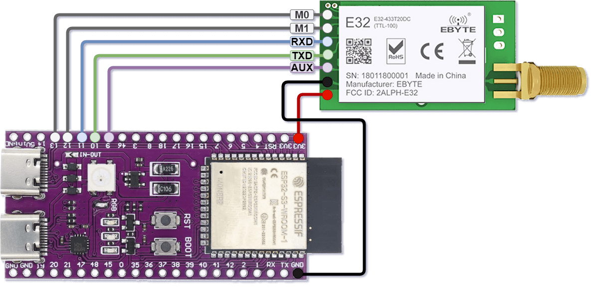

Wiring
The pictures in this section will be changed to better ones soon.
ESP32-S3
In this example, the E32-433T20DC module is connected to a ESP32-S3.
This MCU serves as an example for MCU’s that don’t restrict certain functionalities such as UART to specific pins.
The only issue that could be pointed out is the fact it is powered by 3.3V which could cause power dips more easily.
{kind=link}
Configuration used in all sender examples.
STM32 Black Pill
In this example, the E32-433T20DC module is connected to a STM32F411CE Black Pill.
This MCU requires the some specific pins to be used for the UART bus.
The MCU’s USART1 pins are both used out-of-the-box, so we’ll need to use the USART2 pins.
E32 Pin |
Pin constant |
STM32 Pin |
Pin function |
Alternatives |
|---|---|---|---|---|
M0 |
|
|
Generic I/O |
Any output pin |
M1 |
|
|
Generic I/O |
Any output pin |
RXD |
|
|
|
None |
TXD |
|
|
|
None |
AUX |
|
|
Generic I/O |
Any input pin |
{kind=link}
Configuration used in all receiver examples.
Other boards
Other boards should work similarly to the ESP32-S3 unless they have specific limitations.
If you have any other that have some special requirements or you think are worth mentioning, don’t hesitate to create an issue on the repo with a picture of your wiring.
We’d be glad to include it on this page.